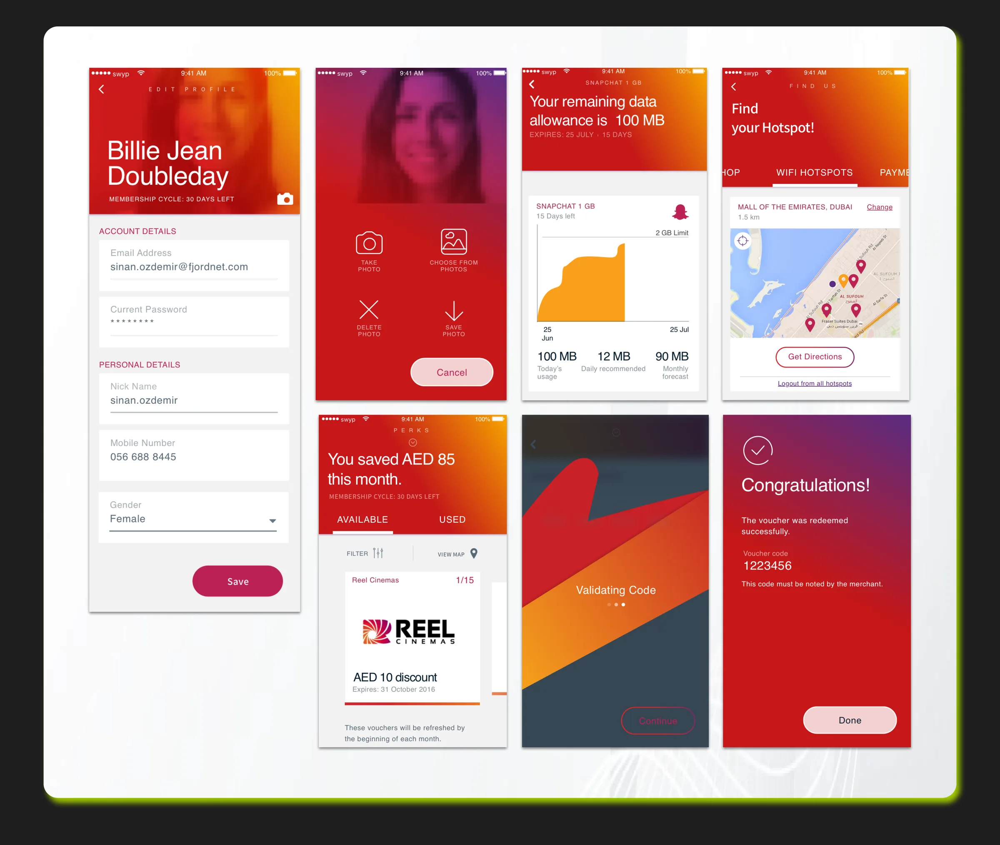

Problem Statement
How might we increase retention through mobile app features & rewarding programs in a mobile app tailored for youth?
Role & Responsibilities
As the Lead Product Designer, I led user research and strategy to improve engagement among younger audiences. I conducted 1:1 and group interviews, analyzed behavioral insights, and defined key engagement drivers that informed product direction.
I guided the design team through benchmarking, feature ideation, and prototyping, ensuring our solutions resonated with youth behavior and preferences. I collaborated closely with engineering, PMs, and QA teams to deliver high-impact experiences.
Research, Options & Trade-offs
What research revealed
Interviews showed young users valued social sharing and real-world perks (food, cinema, free Wi-Fi) more than data-plan features.
Directions explored
- Option A: A slimmed-down version of the main app. Dropped: didn't feel made for them.
- Option B: A separate youth experience built around perks, sharing and achievements. Chosen.
Trade-offs
Brand guidelines limited how far the visual style could move from the parent brand.
High-Fidelity Designs
A vibrant mobile app tailored for young users. Easy to use and to onboard. It contains social media activities such as sharing of rewards with friends and bragging about achievements.
Monitor data usage, get free WIFI hotspots, get discounts on favorite restaurants and meals, and loads of buy 1 get 1 offers from many participating stores and cinemas.
